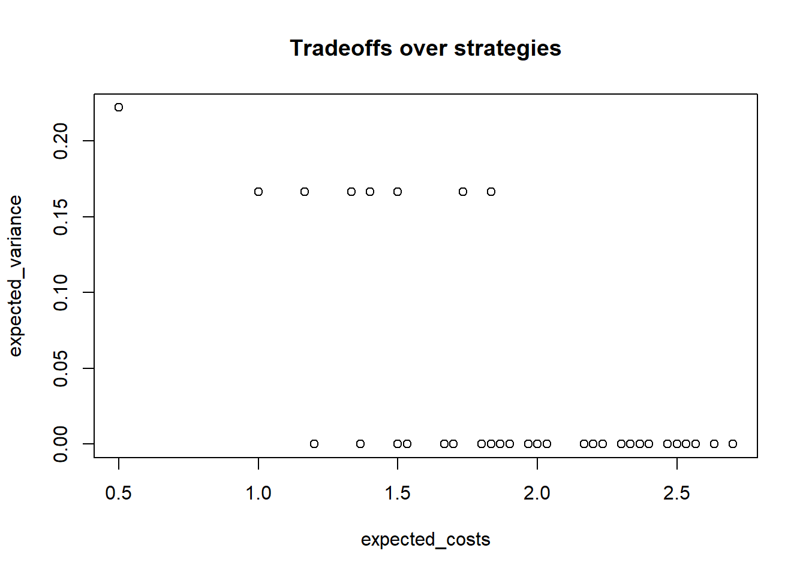

Chapter 11 Clue Selection as a Decision Problem
We draw out the implications of the causal model approach for clue selection strategies. We introduce a tool for generating an optimal decision tree for clue selection given.
Consider now the problem of determining what qualitative data to gather on a case. Evidently it makes sense to gather information on clues that have large probative value, but whether or not clues have probative value can depend on what clues have already been collected: Finding out that the Butler had no motive may be informative for the claim that he is innocent, but it may not be useful if you already know he had no opportunity.
To motivate our thinking about clue-selection, consider again our running example with the free press and government removal. We can use this toy example to see, intuitively, how researchers may have a choice among observations that could be informative, and how the informativeness of an observation can depend on what is already known. In Figure , we showed how one can use the structural equations to provide a set of conditional causal graphs that let one see easily what caused what at different values of the exogenous nodes \(S\) and \(X\). Each of these plots graphs a particular context. We can thus readily see which collection of exogenous nodes constitutes—gives the answer to—a given query, or estimand. Turning things around, we can also see, given a query, which nodes are informative about the probability that the query is true.1
FLAG: Where is the running example figure currently? Need to reference it.
FLAG: I’m having trouble getting the logical progression here. Seems somewhat broken in the sense that it’s incomplete. Conceptually, we might think of informativeness situations as taking four possible forms of interest: a clue is always informative; never informative; informative only conditional on something else (obviously, what the something else is can vary); conditional only in the absence of something else. We seem to be covering always informative and conditionally uninformative. Seems odd not to also show always uninformative and informative only conditional on something else. But not sure if we can do this with this example.
For example, suppose that one can see that \(Y=0\) but does not know the causal effect of \(X\) on \(Y\). This is equivalent to saying that we know that we are in panel \(A\), \(B\), or \(C\) but do not know which of these we are in. Would it be helpful to collect the clue \(S\) if one has no other information? Defining the query in terms of root nodes, the question becomes \(S \stackrel{?}{=} 1\), or \(P(S=1|X=0,Y=0)\); the difference between the contexts in the two panels is that \(S=0\) when, and only when, \(X=0\) causes \(Y=0\). Given the structural equation for \(S\), \(P(S|X=0,Y=0) = P(S|X=0)\), and given independence of \(X\) and \(S\), \(P(S=1|X=0)= \pi^S\) (the simple assignment propensity). Figuring out \(S\) fully answers the query.2
We can also see instances in this example of how existing data can make clues uninformative. Say one wanted to know if \(X\) causes \(C\) in a case. As we can see from inspection of the panels, this query is equivalent to asking whether \(S=1\) (as \(X\) causes \(C\) only in those two panels (\(B\) and \(D\)) where \(S=1\)). Data on \(R\) is unconditionally informative about this query as \(R\) is not \(d-\)separated from \(S\). For example, \(R=1\) implies \(S=0\). However, if \(C\) and \(X\) are already known, then \(R\) is no longer informative because \(C\) and \(X\) together d-separate \(R\) from \(S\).3
The running example also lets us demonstrate how informative clues can be found in many different places in a graph.
Informative spouses Spouses—parents of the same child—can inform on one another. As we have seen in other examples, when an outcome has multiple causes, knowing the value of one of those causes helps assess the effect(s) of the other(s). For example, here, \(S\) and \(X\) are both parents of \(C\); \(S\) is thus informative for assessing whether \(X\) causes \(C\). Indeed this query, written in terms of roots, is simply \(P(S)\): \(X\) causes \(C\) if and only if \(S=1\). Likewise, \(S\) causes \(C\) (negatively) if and only if \(X=1\).
Pre-treatment clues. Did the absence of media reports on corruption (\(R=0\)) cause government survival (\(Y=0\))? Look to the pre-treatment clue, \(X\): \(X=0\) is a smoking gun establishing that the absence of a report produced government survival. Or, substantively, if there were a free press, then a missing report would never be a cause of survival since it would occur only in the absence of corruption, which would itself be sufficient for survival. More broadly, this example illustrates how knowledge of selection into treatment can be informative about treatment effects.
Post-outcome clues. Suppose we observe the presence of a free press (\(X=1\)) and want to know if it caused a lack of corruption (\(C=0\)), but cannot observe the level of corruption directly. Observing \(Y\)—which occurs after the outcome—is informative here: if \(X=1\), then \(X\) causes \(C\) (negatively) if and only if \(Y=0\). When an outcome is not observed, a consequence of that outcome can be informative about its value and, thus, about the effect of an observed suspected cause.
Mediators as clues: We see a politically sensitive government (\(S=1\)) and its survival (\(S=0\)). Did the government survive because of its sensitivity to public opinion? Here, the mediation clue \(C\) is helpful: a lack of corruption, \(C=0\), is evidence of \(S\)’s negative effect on \(Y\).
And, of course, different clues can be informative in different ways for different types of estimand.
Needed then is a systematic way for identifying what clues to look for for answering a given type of causal quesiton, given what we already know—and perhaps, in what order to look for them.
11.1 A strategic approach
The representation of inference problems as one of querying a Bayesian model points to a relatively simple method for answering this question, at least for small problems. Consider, first, a situation in which one has access to data \(W\) and wants to know the expected probative value of all possible collections of data one could gather.
This can be done as follows:
- Define the model.
- Define a query on the model.
- Define a data strategy: a set of clues for which one might search (e.g., observe the value of \(C\)).
- Given prior data, figure out the probability of different realizations of the new data, and for each possible realization calculate the posterior variance. Then calculate the expected posterior variance for the data strategy by taking an average of these variances, with weights given by the probability of observing the clue realization in question.
- Repeat steps 3-4 for different data strategies.
This procedure returns the expected posterior variances associated with different data strategies.
A still more sophisticated strategy would, for multiple clues, take sequence into account: it would tell us which clues to search for later in the process given the realization of clues sought earlier. The path-dependence of clue selection arises from the possibility that the informativeness of a clue may depend on the value of other nodes in the model. A given clue \(K_2\), for instance, may be informative if another clue \(K_1\) has the value of 1 but not if it has the value 0.
We provide tools for both of these approaches and illustrate them below for both the running example and the democracy application.
11.2 Clue selection for the running example
Let’s return to the running example and assess the informativeness of different clue strategies for different estimands.
This model is formally defined in gbiqq as follows:
model <-
make_model("S -> C -> Y <- R <- X; X -> C -> R") %>%
set_restrictions(labels = list(C = "C1110", R = "R0001", Y = "Y0001"),
keep = TRUE) %>%
set_priors()As we have fully specified deterministic functional equations for this model, we restrict the nodal types to just those consistent with these functions. So, for instance, we restrict \(C\)’s nodal type to \(\theta^C_{1110}\) because \(C=1-XS\), meaning that it takes on a value of 1 unless both of its parents take on a value of 1, in which case it is 0. Similarly, the functional equation \(R=CX\) implies the nodal type \(\theta^R_{0001}\), with \(R\) equal to 0 unless both of its parents are equal to 1.
Using this model we can ask how likely different data realizations are and what we would infer from each possible data realization, given existing data. We illustrate assuming we already know that \(X=0\) and \(Y=0\).
Application of the function conditional_inferences produces a matrix with the results. We reproduce these as Table 11.1.
| S | X | C | R | Y | posterior | prob |
|---|---|---|---|---|---|---|
| NA | 0 | NA | NA | 0 | 0.5 | 0.50 |
| 0 | 0 | NA | NA | 0 | 1.0 | 0.25 |
| 1 | 0 | NA | NA | 0 | 0.0 | 0.25 |
| NA | 0 | 1 | NA | 0 | 0.5 | 0.50 |
| 0 | 0 | 1 | NA | 0 | 1.0 | 0.25 |
| 1 | 0 | 1 | NA | 0 | 0.0 | 0.25 |
| NA | 0 | NA | 0 | 0 | 0.5 | 0.50 |
| 0 | 0 | NA | 0 | 0 | 1.0 | 0.25 |
| 1 | 0 | NA | 0 | 0 | 0.0 | 0.25 |
| NA | 0 | 1 | 0 | 0 | 0.5 | 0.50 |
| 0 | 0 | 1 | 0 | 0 | 1.0 | 0.25 |
| 1 | 0 | 1 | 0 | 0 | 0.0 | 0.25 |
Each inference has an associated posterior variance and so it is easy to assess the expected reduction in variance from seeking any kind of clue. See Table ??.
| Strategy | Given | Prior belief | Prior Uncertainty | Posterior Uncertainty |
|---|---|---|---|---|
| S | X==0 & Y==0 | 0.5 | 0.25 | 0 |
| C | X==0 & Y==0 | 0.5 | 0.25 | 0.25 |
| R | X==0 & Y==0 | 0.5 | 0.25 | 0.25 |
| C, R | X==0 & Y==0 | 0.5 | 0.25 | 0.25 |
| C, S | X==0 & Y==0 | 0.5 | 0.25 | 0 |
| S, R | X==0 & Y==0 | 0.5 | 0.25 | 0 |
| C, S, R | X==0 & Y==0 | 0.5 | 0.25 | 0 |
The implication of the analysis is that if we know \(X=0\) and \(Y=0\) and we are interested in finding out whether\(X=0\) because \(Y\) is 0 we should look for evidence on \(S\). Given this simple model, knowledge of \(S\) is enough to answer the question at hand and no othe information is useful at all.
11.2.1 Dynamic Strategies
The clue collection strategies described above assume that researchers identify the full set of clues to be gathered in advance and do not alter their in Given \(n\) nodes, a data collection strategy will be of the form: \[\sigma = \{K_1, (K_2|K_1 = 1), (K_2|K_1 = 0), (K_3|K_1=1, K_2 =0)\dots\}\]
where each \(K_j\) is en element of the nodes on the graph, or is the empty set. Each of these strategies has an associated expected reduction in variance as well as an associated expected cost. Such a strategy vector specifies the first clue, and then subsequent clues condition on what was found from previous searches.
To illustrate with the running example we imagine a situation in which it is known that \(Y=1\) and we are interested in whether \(Y=0\) because of \(S\) (though we don’t know at the outset what the value of \(S\) is). We consider strategies in which we first seek information on one node and then, conditional on what we find, we look for data on one other node (or not). With five nodes, one already known, there are \(4 \times 4^2\) strategies of this form.
Say that the government was not replaced, we want to know is this because the government was sophisticated. If we learn that the government was not sophisticated, then this answers the question in the negative. If we learn that the government was sophisticated then we can infer that this was the cause if we learn that there was a free press (or if we learn that there was no corruption).
For each strategy we can then assess the expected variance reduction; in addition, if collecting different clues comes at different costs—but collection depends on past findings—then we can also calculated the expected costs of each strategy.
| Strategy | Step 1 | Step 2 if 0 | Step 2 if 1 | Expected variance | Expected Cost |
|---|---|---|---|---|---|
| 1 | S | None | None | 0.167 | 1 |
| 2 | S | X | X | 0 | 2.5 |
| 3 | S | None | X | 0 | 2 |
Figure ?? plots a collection of strategies based on two criteria—the variance reduction and the expected number of clues sought, which could be an indicator for cost. One can see a frontier of optimal strategies, depending on how these two desiderata trade-off against each other. FOr the figure we imagined that \(X\) is the most costly to collect, followed by \(C\), then \(S\), then \(Y\), then \(R\). The cheapest strategy among those that minimize variance involves gathering \(C\) only. The lowest variance strategy that minimizes costs gathering \(Y\) only.

11.3 Clue selection for the Democracy model
With a model in hand we are also in a position to assess what we could learn from different data stratgies and what we would infer upon discovery of different data.
| I | P | M | D | posterior | prob |
|---|---|---|---|---|---|
| 1 | NA | NA | 1 | 0.128 | 0.196 |
| 1 | 0 | NA | 1 | 0.231 | 0.054 |
| 1 | 1 | NA | 1 | 0.088 | 0.142 |
| 1 | NA | 0 | 1 | 0.000 | 0.029 |
| 1 | 0 | 0 | 1 | 0.000 | 0.004 |
| 1 | 1 | 0 | 1 | 0.000 | 0.025 |
| 1 | NA | 1 | 1 | 0.150 | 0.167 |
| 1 | 0 | 1 | 1 | 0.250 | 0.050 |
| 1 | 1 | 1 | 1 | 0.107 | 0.117 |
We show in Table how uncertainty is likely to be reduced with different research designs. We show these reductions here for the two kinds of cases in which democratization does occur. The first row displays the variance on our posterior belief about the effect if \(I\) on \(D\) before we observe anything at all. The second row shows what happens to that uncertainty when we observe just cause and outcome, \(I\) and \(D\). The next four rows show the results for four possible choices in regard to process tracing: looking for neither \(M\) nor \(P\) (which is identical to doing no process tracing at all); looking for \(P\); looking for \(M\); and looking for both. The clearest message here is that, if we had to choose between clues, we should observe \(P\): given our model (including our priors on the types), we reduce our uncertainty more by learning about an alternative cause than by learning about a mediator. We also see that the mediator is much more informative when the causal effect we are looking for is one that could have operated via the mediator, as compared to when the mediator is informative only as a moderator of the cause’s direct effects.
| given | prior_estimand | prior_var | E_post_var |
|---|---|---|---|
| I==1 & D==1 | 0.128 | 0.112 | 0.112 |
| I==1 & D==1 | 0.128 | 0.111 | 0.107 |
| I==1 & D==1 | 0.128 | 0.111 | 0.109 |
| I==1 & D==1 | 0.128 | 0.111 | 0.105 |
| strategy | given | prior_estimand | prior_var | E_post_var |
|---|---|---|---|---|
| None | I==0 & D==1 | 0.438 | 0.246 | 0.246 |
| P | I==0 & D==1 | 0.438 | 0.246 | 0.229 |
| M | I==0 & D==1 | 0.438 | 0.246 | 0.245 |
| P and M | I==0 & D==1 | 0.438 | 0.246 | 0.225 |
To come: applied case-level analyses involving causal pathways, actual causes, and notable causes.
FLAG: DISTINGUISH ROWS IN THIS TABLE
FLAG: ADD DYNAMIC
11.4 Conclusion
Explicit statement of a causal model—including prior beliefs over roots—allows one to assess what will be inferred from all possible observations. This opens the way for simple strategies for assessing what data is most valuable, and in what order it should be gathered.
We are conscious that here we are pushing the basic logic to the limits. In practice researchers will often find it difficult to describe a model in advance and to place beliefs on nodes. Moreover the collection of new data could easily give rise to possibilities and logics that were not previously contemplated. Nothing here seeks to deny these facts; the claim here is a simpler one: insofar as one can specify a model before engaging in data gathering, the model provides a powerful tool to assess what data is most useful to gather.
With larger graphs, continuous variables, and more stochastic components, it may not be feasible to graph every possible context; but the strategy for inference remains the same.↩
Graphically what is important is that \(S\) is informative not because it is \(d-\)connected with \(Y\), but because it is \(d-\)connected to the query variable—here, simply, to itself.↩
We can come to the same conclusion by reasoning with the graphs: if \(X=0\) and \(C=1\), we know we are in subfigure \(A\) or \(B\), and \(X\) causes \(C\) only in panel \(B\). However, \(R\) is of no help to us in distinguishing between the two contexts as it takes the same value in both graphs.↩